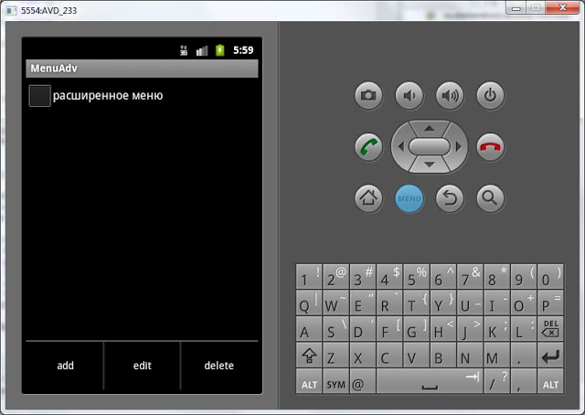
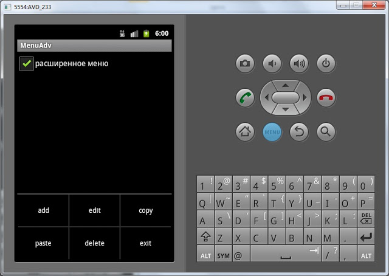

В этом уроке мы:
- создаем пункты меню c ID
- группируем и сортируем пункты меню
На прошлом уроке мы рассмотрели простейший способ создания меню методом add(CharSequence title), на вход мы подавали только текст. Рассмотрим другую реализацию этого метода - add(int groupId, int itemId, int order, CharSequence title). У этого метода 4 параметра на вход:
- groupId - идентификатор группы, частью которой является пункт меню
- itemId - ID пункта меню
- order - для задания последовательности показа пунктов меню
- title - текст, который будет отображен
Чтоб показать как используются все эти параметры, создадим приложение. На экране будет TextView и CheckBox:
- TextView будет отображать какой пункт меню был выбран
- CheckBox будет определять показывать обычное меню или расширенное. Это будет реализовано с помощью групп меню.
Сразу уточню, понятия "обычное" и "расширенное" - это не Андроид-понятия, а просто мои названия. Т.е. когда запущено приложение и пользователь жмет кнопку меню, он видит "обычное" меню. Если же он включит CheckBox, то будет отображаться "расширенное" меню, в котором больше пунктов.
Создаем проект:
Project name: P0141_MenuAdv
Build Target: Android 4.0
Application name: MenuAdv
Package name: ru.startandroid.develop.menuadv
Create Activity: MainActivity
Откроем main.xml, присвоим ID существующему TextView, сотрем его текст и создадим CheckBox. Код:
<?xml version="1.0" encoding="utf-8"?>
<LinearLayout
xmlns:android="http://schemas.android.com/apk/res/android"
android:orientation="vertical"
android:layout_width="fill_parent"
android:layout_height="fill_parent">
<CheckBox
android:layout_width="wrap_content"
android:layout_height="wrap_content"
android:id="@+id/chbExtMenu"
android:text="расширенное меню">
</CheckBox>
<TextView
android:layout_width="fill_parent"
android:layout_height="wrap_content"
android:id="@+id/textView">
</TextView>
</LinearLayout>Открываем MainActivity.java и класс MainActivity заполняем следующим кодом:
public class MainActivity extends Activity {
// Элементы экрана
TextView tv;
CheckBox chb;
/** Called when the activity is first created. */
@Override
public void onCreate(Bundle savedInstanceState) {
super.onCreate(savedInstanceState);
setContentView(R.layout.main);
// находим элементы
tv = (TextView) findViewById(R.id.textView);
chb = (CheckBox) findViewById(R.id.chbExtMenu);
}
// создание меню
@Override
public boolean onCreateOptionsMenu(Menu menu) {
// TODO Auto-generated method stub
// добавляем пункты меню
menu.add(0, 1, 0, "add");
menu.add(0, 2, 0, "edit");
menu.add(0, 3, 3, "delete");
menu.add(1, 4, 1, "copy");
menu.add(1, 5, 2, "paste");
menu.add(1, 6, 4, "exit");
return super.onCreateOptionsMenu(menu);
}
// обновление меню
@Override
public boolean onPrepareOptionsMenu(Menu menu) {
// TODO Auto-generated method stub
// пункты меню с ID группы = 1 видны, если в CheckBox стоит галка
menu.setGroupVisible(1, chb.isChecked());
return super.onPrepareOptionsMenu(menu);
}
// обработка нажатий
@Override
public boolean onOptionsItemSelected(MenuItem item) {
// TODO Auto-generated method stub
StringBuilder sb = new StringBuilder();
// Выведем в TextView информацию о нажатом пункте меню
sb.append("Item Menu");
sb.append("\r\n groupId: " + String.valueOf(item.getGroupId()));
sb.append("\r\n itemId: " + String.valueOf(item.getItemId()));
sb.append("\r\n order: " + String.valueOf(item.getOrder()));
sb.append("\r\n title: " + item.getTitle());
tv.setText(sb.toString());
return super.onOptionsItemSelected(item);
}
}Не забудьте обновить импорт (CTRL+SHIFT+O).
Давайте разбирать написанное. Мы используем следующие методы:
onCreateOptionsMenu - вызывается только при первом показе меню. Создает меню и более не используется. Здесь мы добавляем к меню пункты.
onPrepareOptionsMenu - вызывается каждый раз перед отображением меню. Здесь мы вносим изменения в уже созданное меню, если это необходимо
onOptionsItemSelected - вызывается при нажатии пункта меню. Здесь мы определяем какой пункт меню был нажат.
В методе onCreateOptionsMenu мы добавляем 6 пунктов меню. Обратим внимание на параметры метода Add.
Первый параметр – ID группы. В первых трех пунктах он равен нулю, в оставшихся трех – 1. Т.е. пункты меню copy, paste и exit объединены в группу с ID = 1. Визуально это никак не проявляется - они не отличаются цветом или еще чем-либо. ID группы мы будем использовать в реализации onPrepareOptionsMenu.
Второй параметр – ID пункта меню. В обработчике используется для определения какой пункт меню был нажат. Будем использовать его в onOptionsItemSelected.
Третий параметр – определяет позицию пункта меню. Этот параметр используется для определения порядка пунктов при отображении меню. Используется сортировка по возрастанию, т.е. от меньшего order к большему.
Четвертый параметр – текст, который будет отображаться на пункте меню. Тут все понятно.
В метод onPrepareOptionsMenu передается объект Menu и мы можем работать с ним. В данном примере вызываем setGroupVisible. Этот метод позволяет скрывать\отображать пункты меню. На вход подается два параметра – ID группы и boolean-значение. В качестве ID группы мы пишем – 1 (та самая группа с ID = 1, в которой находятся пункты copy, paste и exit), а в качестве boolean параметра используем состояние CheckBox. Если он включен, то пункты меню (из группы с ID = 1) будут отображаться, если выключен – не будут.
Сохраним все и запустим приложение.
"Обычное" меню:

"Расширенное" меню

В зависимости от состояния CheckBox в меню видно 3 или 6 пунктов.
Обратите внимание на порядок пунктов. Они отсортированы по параметру order по возрастанию. Если order у нескольких пунктов совпадает, то эти пункты размещаются в порядке их создания в методе onCreateOptionsMenu.
При нажатии на какой-либо пункт меню срабатывает метод onOptionsItemSelected. В нем мы выводим в TextView информацию о нажатом пункте. Можете сверить эту информацию с тем, что мы кодили при создании пунктов меню. Все параметры должны совпадать. Порядок, для удобства, я сделал такой же как и в методе add: groupId, itemId, order, title.
Попробуйте добавить еще несколько пунктов в меню, чтобы их стало больше шести. И обратите внимание, как они отобразятся.
Для упрощения кода я использовал напрямую цифры для ID групп и ID пунктов меню. А вообще рекомендуется использовать константы, в дальнейшем буду использовать их.
XML-меню
Есть еще один, более удобный и предпочтительный способ создания меню - с использованием xml-файлов, аналогично layout-файлам при создании экрана. Чтобы получить меню, которые мы создавали программно на этом уроке, надо создать в папке res/menu файл mymenu.xml:
<?xml version="1.0" encoding="utf-8"?>
<menu
xmlns:android="http://schemas.android.com/apk/res/android">
<item
android:id="@+id/menu_add"
android:title="add">
</item>
<item
android:id="@+id/menu_edit"
android:title="edit">
</item>
<item
android:id="@+id/menu_delete"
android:orderInCategory="3"
android:title="delete">
</item>
<group
android:id="@+id/group1">
<item
android:id="@+id/menu_copy"
android:orderInCategory="1"
android:title="copy">
</item>
<item
android:id="@+id/menu_paste"
android:orderInCategory="2"
android:title="paste">
</item>
<item
android:id="@+id/menu_exit"
android:orderInCategory="4"
android:title="exit">
</item>
</group>
</menu>item - это пункт меню, group - группа. В атрибутах ID используем ту же схему, что и в ID экранных компонентов, т.е. пишем @+id/<your_ID> и Eclipse сам создаст эти ID в R.java. Атрибут orderInCategory - это порядок пунктов, а title - текст.
В методе onCreateOptionsMenu нам теперь не надо вручную писать создание каждого пункта, мы просто свяжем menu, который нам дается на вход и наш xml-файл.
public boolean onCreateOptionsMenu(Menu menu) {
getMenuInflater().inflate(R.menu.mymenu, menu);
return super.onCreateOptionsMenu(menu);
}С помощью метода getMenuInflater мы получаем MenuInflater и вызываем его метод inflate. На вход передаем наш файл mymenu.xml из папки res/menu и объект menu. MenuInflater берет объект menu и наполняет его пунктами согласно файлу mymenu.xml.
Если захотите скрыть группу, выполняете тот же метод setGroupVisible и передаете туда R.id.group1 в качестве ID группы.
Подробно атрибуты для xml-файла меню можно посмотреть здесь.
Я вам рекомендую опробовать и потестить оба способа созданию меню. Программное создание гибче, а xml сокращает код.